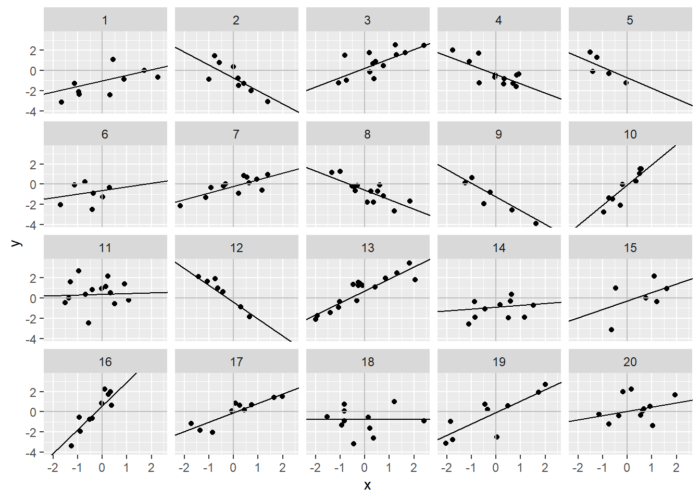

set.seed(10)
n <- 200 # number of observations
j <- 10 # number of groups
a_bar <- .5 # mean of intercepts
b <- .5 # slope
sigma_a <- .75 # error standard deviation of the intercept
sigma_y <- 1.1 # individual level error standard deviation
group <- sample(1:j, n, replace = T) # assign individuals to groups
a <- rnorm(j, mean = a_bar, sd = sigma_a) # sample j intercepts
x <- rnorm(n) # sample n predictor values
mu <- a[group] + b * x # calculate the conditional means
y <- rnorm(n, mu, sigma_y) # add noise to the prediction.
x_pred <- seq(-3,3,l = 100)
plot(y ~ x, pch = 19)
for(i in 1:j) lines((a[i] + b*x_pred) ~ x_pred, col = "grey")
lines(a_bar + x_pred*b ~ x_pred, col = "red")Into the multilevel model: Varying slopes and group level predictors
Varying Intercepts
Let’s start by simulating a varying intercepts model similar to our discussion last week:
\[ \begin{align*} y_i &\sim Normal(\mu_i, \sigma_y)\\ \mu_i &= \alpha_{j[i]} + \beta x_i\\ \alpha_j &\sim Normal(\overline{\alpha}, \sigma_{\alpha}) \end{align*} \]
Let’s fit a varying intercepts model to this data.
library(lme4)
library(arm)
grp <- as.numeric(group)
mod1 <- lmer(y ~ 1 + x + (1|grp))
display(mod1)lmer(formula = y ~ 1 + x + (1 | grp))
coef.est coef.se
(Intercept) 0.75 0.17
x 0.45 0.07
Error terms:
Groups Name Std.Dev.
grp (Intercept) 0.48
Residual 1.08
---
number of obs: 200, groups: grp, 10
AIC = 626.2, DIC = 607.7
deviance = 613.0 So the model has point estimates of \(\overline{\alpha} = .75 \pm .34\), \(\beta = .45 \pm .14\), \(\sigma_y = 1.08\), \(\sigma_{\alpha} = .48\). This all is pretty close to our simulated values.
Intro to varying intercepts and varying slopes
It would be nice if we could just add an independent model: \(\beta_j \sim Normal(\overline{\beta}, \sigma_{\beta})\). Unfortunately, we are not so lucky. We could do this if we expect \(\alpha_j\) and \(\beta_j\) to be uncorrelated, but they will often be correlated, so we need to account for this. In this case, we will use the multi-variate normal distribution to model the coefficients. Deep breaths, here we go:
\[ \begin{align*} y_i &\sim Normal(\mu_i, \sigma_y)\\ \mu_i &= \alpha_{j[i]} + \beta_{j[i]} x_i\\ \begin{bmatrix} \alpha_j \\ \beta_j \end{bmatrix} &\sim MVN(\begin{bmatrix} \overline{\alpha}\\\overline{\beta}\end{bmatrix}, \Sigma)\\ \Sigma &= \begin{bmatrix} \sigma_{\alpha}^2 \space \space \rho\sigma_{\alpha}\sigma_{\beta} \\ \rho\sigma_{\alpha}\sigma_{\beta} \space \space \sigma_{\beta}^2\end{bmatrix} \end{align*} \]
Always be simulatin’!. The big new thing here is that now the coefficients are allowed to co-vary. The strength of this covariance is controlled by \(\rho\), or the correlation. Let’s simulate a bunch of \(\alpha\)’s and \(\beta\)’s with different values of \(\rho\). Because correlation is easier to understand than covariance and standard deviations are easier to understand than variances, we will break down the covariance matrix above into: \(\Sigma = SRS\), where \(S\) is a diagonal matrix with the standard deviations of the coefficients on the diagonal and 0’s everywhere else, and \(R\) is a correlation matrix with 1’s on the diagonal and correlations elsewhere:
\[ \Sigma = \begin{bmatrix} \sigma_{\alpha} \space 0 \\ 0 \space \sigma_{\beta} \end{bmatrix}\begin{bmatrix} 1 \space \rho\\ \rho \space 1 \end{bmatrix}\begin{bmatrix} \sigma_{\alpha} \space 0 \\ 0 \space \sigma_{\beta} \end{bmatrix} \]
coef_sims <- function(rho){
n <- 1000
a_bar <- .5
b_bar <- .5
sig_a <- 1.1
sig_b <- 1.5
rho <- rho
S <- diag(c(sig_a, sig_b))
R <- matrix(c(1, rho, rho, 1), ncol = 2)
a_b <- MASS::mvrnorm(n, c(a_bar, b_bar), S %*% R %*% S)
plot(a_b[,1] ~ a_b[,2])
}
coef_sims(0)coef_sims(.5)coef_sims(.75)coef_sims(-.5)coef_sims(-.75)
abline(a = .5 - .5*-.75*1.1/1.5, b = -.75*1.1*1.5/(1.5^2), col = "blue")coef_sims(1)
abline(a = .5 - .5*1.1/1.5, b = 1*1.1*1.5/(1.5^2), col = "blue")So let’s go ahead and simulate a varying slopes and varying intercepts data generating process and fit it.
n <- 200
a_bar <- 0
b_bar <- .5
sig_a <- .75
sig_b <- 1.1
sig_y <- 1
rho <- .5
S <- diag(c(sig_a, sig_b))
R <- matrix(c(1, rho, rho, 1), ncol = 2)
a_b <- MASS::mvrnorm(20, c(a_bar, b_bar), S %*% R %*% S)
group <- sample(1:20, n, replace = T)
x <- rnorm(n)
mu <- a_b[group, 1] + a_b[group, 2] * x
y <- rnorm(n, mu, sig_y)
plot(y ~ x, pch = 19)Kinda hard to see what’s going on, let’s plot all the groups.
library(tidyverse)── Attaching core tidyverse packages ──────────────────────── tidyverse 2.0.0 ──
✔ dplyr 1.1.4 ✔ readr 2.1.5
✔ forcats 1.0.0 ✔ stringr 1.5.1
✔ ggplot2 3.5.1 ✔ tibble 3.2.1
✔ lubridate 1.9.3 ✔ tidyr 1.3.1
✔ purrr 1.0.2
── Conflicts ────────────────────────────────────────── tidyverse_conflicts() ──
✖ tidyr::expand() masks Matrix::expand()
✖ dplyr::filter() masks stats::filter()
✖ dplyr::lag() masks stats::lag()
✖ tidyr::pack() masks Matrix::pack()
✖ dplyr::select() masks MASS::select()
✖ tidyr::unpack() masks Matrix::unpack()
ℹ Use the conflicted package (<http://conflicted.r-lib.org/>) to force all conflicts to become errorsdata.frame(y, x, group) %>%
ggplot(aes(x = x, y = y)) +
geom_point() +
facet_wrap(group ~ .)Now let’s fit the model with lmer.
grp <- factor(group)
mod2 <- lmer(y ~ 1 + x + (1 + x|grp))
display(mod2)lmer(formula = y ~ 1 + x + (1 + x | grp))
coef.est coef.se
(Intercept) -0.30 0.16
x 0.22 0.28
Error terms:
Groups Name Std.Dev. Corr
grp (Intercept) 0.61
x 1.18 0.56
Residual 0.97
---
number of obs: 200, groups: grp, 20
AIC = 645.2, DIC = 627.4
deviance = 630.3 fits <- data.frame(group = 1:20, a = coef(mod2)$grp[,1], b = coef(mod2)$grp[,2])Let’s plot the mean fits on the data
data.frame(y, x, group) %>%
ggplot(aes(x = x, y = y)) +
geom_point() +
facet_wrap(group ~ .) +
geom_vline(xintercept = 0, color = "grey") +
geom_hline(yintercept = 0, color = "grey") +
geom_abline(data = fits, aes(slope = b, intercept = a))
Adding Group Level Predictors
Let’s load in the plant germination data to play around with some real data. Let’s plot it to see what it looks like. There are many things that we might be interested about in this data set. Let’s start off by trying to estimate growth rates. In this case, growth rate will be the regression coefficient on age.
library(here)here() starts at C:/Users/jjk06/OneDrive/Desktop/Fall_2024growth_dat <- read.csv(here("data/week_10/plant_growth.csv"))
head(growth_dat) id seed_size size age
1 1_1 0.04398394 1.915 1
2 1_1 0.04398394 4.016 3
3 1_1 0.04398394 7.821 6
4 1_2 -0.01040480 3.133 1
5 1_2 -0.01040480 5.999 3
6 1_2 -0.01040480 15.602 6growth_dat %>%
ggplot(aes(x = age, y = size)) +
geom_point()Looks like exponential growth. We could probably use a log-normal GLMM, but let’s transform it for fun.
growth_dat$l_size <- log(growth_dat$size)
growth_dat %>%
ggplot(aes(x = age, y = l_size)) +
geom_point()It looks nice and linear now! So let’s do some modeling. It is probably a bad idea to completely pool this data since multiple measures were taken for each individual. So we will use a multilevel model (partial pooling) to get at the variation between individuals. Let’s fit no-pool model as well and compare the intercepts
growth_dat$id <- factor(growth_dat$id)
mod_p_pool <- lmer(l_size ~ 1 + age + (1 + age|id), data = growth_dat)
mod_no_pool <- lm(l_size ~ -1 + age + id + id*age, data = growth_dat)
coef(mod_p_pool)$id
(Intercept) age
1_1 0.48549775 0.26725768
1_10 0.72556673 0.30280747
1_11 0.49179495 0.29185197
1_12 0.65888082 0.25166042
1_13 0.08988111 0.28554479
1_14 0.67811242 0.28150616
1_15 0.23063808 0.28525350
1_16 1.07514468 0.26523973
1_17 0.73613991 0.27334570
1_18 0.75198377 0.27475451
1_19 0.96753869 0.24380945
1_2 0.86943876 0.30646593
1_20 0.72789964 0.26627216
1_22 0.95631262 0.17951389
1_23 0.43164622 0.27505914
1_24 0.68791453 0.08587145
1_27 0.63672506 0.28997290
1_28 0.59491649 0.27573163
1_29 0.95015708 0.26804459
1_3 0.73141207 0.29036888
1_30 0.71109477 0.29458840
1_32 0.65894892 0.20354316
1_34 0.70244452 0.29322823
1_35 0.34325162 0.31259412
1_38 0.69204912 0.27888749
1_39 0.77199242 0.30682060
1_40 0.71368335 0.25759533
1_41 0.35756139 0.26277240
1_44 0.46779832 0.17593475
1_46 0.61662855 0.27797074
1_48 0.65677645 0.23790192
1_49 0.70941964 0.28029488
1_50 0.29335856 0.28117463
1_52 0.70804854 0.22837642
1_53 0.81983949 0.24375136
1_54 0.58823343 0.28964535
1_55 0.94978342 0.28416493
1_56 0.96801701 0.27498733
1_58 0.79257352 0.27354490
1_59 0.84915314 0.30006346
1_6 0.83256562 0.30759232
1_60 0.72398980 0.27097432
1_63 -0.03845211 0.25292917
1_64 0.49862652 0.15476438
1_65 0.95456331 0.27203259
1_66 0.16509182 0.26613710
1_67 0.81001419 0.25205441
1_68 0.80147881 0.16139880
1_69 0.32538224 0.28401747
1_7 0.16954461 0.31824359
1_70 0.69002067 0.29237638
1_71 0.71573316 0.26088145
1_72 0.74700430 0.24289283
1_73 0.56366859 0.27647813
1_74 0.45168743 0.25822445
1_75 0.98246514 0.27530121
1_76 0.72934016 0.24392721
1_77 0.80070090 0.20170997
1_78 0.67508720 0.27483042
1_8 0.84412511 0.19750616
1_80 0.51782184 0.28041166
1_9 0.72510406 0.30523551
2_1 0.23661032 0.27283272
2_11 0.86973202 0.26198592
2_12 0.36503533 0.30105954
2_13 0.47811421 0.30917515
2_14 0.95139647 0.29838230
2_17 0.49364954 0.26604083
2_18 0.67417852 0.30180801
2_21 0.98532710 0.29182268
2_22 0.73794546 0.32088447
2_23 0.88203927 0.27542599
2_24 0.79581678 0.28751875
2_26 0.50175447 0.30976614
2_27 0.64213352 0.29020559
2_28 0.74836192 0.27592092
2_29 0.86713383 0.29738734
2_3 0.99880788 0.28153115
2_30 0.43137666 0.31046431
2_31 0.77843350 0.28083109
2_33 0.61730561 0.31374919
2_34 0.84270332 0.30309842
2_35 -0.24739896 0.11429439
2_36 0.61385119 0.11815428
2_37 0.82231619 0.28747344
2_39 0.35179229 0.24828932
2_41 0.65131300 0.31459328
2_42 0.72162964 0.30062375
2_43 1.09521138 0.24751551
2_45 0.58586326 0.32275610
2_46 0.91097540 0.29145530
2_47 0.75899444 0.24617937
2_48 0.62452935 0.32228436
2_51 0.75384564 0.32167773
2_52 0.86382636 0.27527591
2_53 0.73231682 0.26985530
2_54 0.99531502 0.27429887
2_56 0.69829617 0.19212047
2_57 0.22016757 0.24480711
2_58 1.03515846 0.27057370
2_59 0.93977477 0.18455253
2_62 0.62228348 0.26383045
2_63 0.93008865 0.20027129
2_64 0.46612698 0.24520892
2_65 0.99258217 0.21782940
2_67 1.00405872 0.31304094
2_68 0.90932512 0.28260438
2_69 0.76551004 0.30139165
2_7 0.64803719 0.30338894
2_70 0.86790073 0.31557817
2_76 0.29875324 0.26300339
2_77 0.15560088 0.09257199
2_78 0.83288486 0.29933173
2_79 0.66487395 0.31067439
2_9 0.79538318 0.32253234
attr(,"class")
[1] "coef.mer"fit_no_pool <- as.numeric(coef(mod_no_pool)[2:116])
fit_p_pool <- coef(mod_p_pool)$id[,1]
plot(fit_no_pool, pch = 19)
points(fit_p_pool, col = "blue", ylab = "Intercept", pch = 19)
abline(h = fixef(mod_p_pool)[1])
Notice how the
Adding a group level predictor to the intercept
So this is doing what we want, shrinking the intercepts toward the group mean to help overfitting and use as much information as we can reasonably use. But there is a variable we haven’t considered yet. Seed size is likely a major factor in the size of a seedling at time 0 (i.e. the intercept). Let’s try a varying intercepts model where the intercept is a function of seed size. We want a model that looks like:
\[ \begin{align*} size_{i} &\sim Normal(\mu_{i}, \sigma_{size})\\ \mu_i &= \alpha_{j[i]} + rate\times age_i\\ \alpha_{j} &\sim Normal(\overline{\alpha} + \gamma_{\alpha} \times seedsize_{j}, \sigma_{\alpha}) \end{align*} \]
How do we get this into lmer though? Well, if we remember that this form of the model of \(\alpha_j\) is just a re-writing of the form:
\[ \begin{align*} \alpha_j &= \overline{\alpha} + \gamma_{\alpha} \times seedsize_j + \eta_j\\ \eta_j &\sim Nomral(0, \sigma_{\alpha}) \end{align*} \] We can plug this definition of \(\alpha_j\) into the level one equation:
\[
\begin{align*}
\mu_i &= (\overline{\alpha} + \gamma_{\alpha} \times seedsize_j + \eta_j) + rate\times age_i\\
\end{align*}
\] So, in lmer it becomes: lmer(l_size ~ 1 + seed_size + age + (1|id)). Let’s try it out.
mod_seed_int <- lmer(l_size ~ 1 + seed_size + age + (1|id), data = growth_dat)
display(mod_seed_int)lmer(formula = l_size ~ 1 + seed_size + age + (1 | id), data = growth_dat)
coef.est coef.se
(Intercept) 0.63 0.04
seed_size 0.07 0.03
age 0.28 0.00
Error terms:
Groups Name Std.Dev.
id (Intercept) 0.36
Residual 0.22
---
number of obs: 562, groups: id, 115
AIC = 203.8, DIC = 153.2
deviance = 173.5 Let’s plot the model for the group level intercepts! This might take some wrangling:
seed_size <- unique(growth_dat[,c("id", "seed_size")])
sims <- sim(mod_seed_int, 1000)
rans <- t(sims@ranef$id[,,1])
ints <- matrix(nrow = 115, ncol = 1000)
for(i in 1:1000){
ints[,i] <- exp(rans[,i] + sims@fixef[i,1] + seed_size$seed_size * sims@fixef[i,2])
}
ints <- data.frame(ints)
z <- data.frame(mu = apply(ints, 1, mean), upr = apply(ints, 1, quantile, .975), lwr = apply(ints, 1, quantile, .025), seed_size = seed_size$seed_size, id = seed_size$id)
seed_pred <- seq(-3,3,l = 100)
int_pred <- int_upr <- int_lwr <- c()
for(i in 1:100){
temp <- sims@fixef[,1] + sims@fixef[,2] * seed_pred[i]
int_pred[i] <- exp(mean(temp))
int_upr[i] <- exp(quantile(temp, .975))
int_lwr[i] <- exp(quantile(temp, .025))
}
data.frame(seed_pred, int_pred, int_upr, int_lwr) %>%
ggplot(aes(x = seed_pred, y = int_pred)) +
geom_line() +
geom_ribbon(aes(x = seed_pred, ymax = int_upr, ymin = int_lwr), alpha = .25) +
geom_point(data = z, aes(x = seed_size, y = mu)) +
geom_errorbar(data = z, aes(x = seed_size, ymax = upr, ymin = lwr), inherit.aes = F,
width = 0)Adding group level predictors to the slope: or, group level predictors as interactions.
How to add group level predictors to the slope using lmer is not intuitive–to me at least. But I think it is helpful to view adding these predictors as creating an interaction between the group level predictor, and the individual level predictor. This helps me think about statistical interactions. I.E. the “main effect” is the mean slope on the individual level predictor and the slope on the interaction adjusts the slope for each group. Let’s build this up.
\[ \begin{align*} y_i &\sim Normal(\mu_i, \sigma_y)\\ \mu_i &= \alpha_{j[i]} + \beta_{j[i]} x_i\\ \begin{bmatrix} \alpha_j \\ \beta_j \end{bmatrix} &= MVNormal(\begin{bmatrix} \overline{\alpha} + \gamma_{\alpha} u_j \\ \overline{\beta} + \gamma_{\beta} u_j \end{bmatrix}, \Sigma) \end{align*} \]
So, now we hvae our individual level predictor, \(x\) and our group level predictor, \(u\). To see how we can use lmer to do this, we can stick our linear models for the intercept and slope into the single level model:
\[ \begin{align*} \mu_i &= \alpha_{j[i]} + \beta_{j[i]} x_i\\ &= (\overline{\alpha} + \gamma_{\alpha} u_{i[j]}) + (\overline{\beta} + \gamma_{\beta} u_{j[i]}) x_i\\ &= \overline{\alpha} + \gamma_{\alpha} u_{j[i]} + \overline{\beta} x_i + \gamma_{\beta} u_{j[i]}x_i \end{align*} \]
This gives us the formula we can use: lmer(y ~ 1 + u + x + u*x + (1 + x|group)). Pretty cool! Let’s fit this model:
mod_var_ints_slopes <- lmer(l_size ~ 1 + seed_size + age + seed_size*age + (1 + age|id), data = growth_dat)
display(mod_var_ints_slopes)lmer(formula = l_size ~ 1 + seed_size + age + seed_size * age +
(1 + age | id), data = growth_dat)
coef.est coef.se
(Intercept) 0.67 0.02
seed_size 0.07 0.02
age 0.27 0.00
seed_size:age 0.00 0.00
Error terms:
Groups Name Std.Dev. Corr
id (Intercept) 0.25
age 0.05 0.07
Residual 0.11
---
number of obs: 562, groups: id, 115
AIC = -150, DIC = -223.7
deviance = -194.9 Let’s sort out this output in terms of our varying intercepts, varying slopes model with predictors. First a reminder of the model: \[ \begin{align*} y_i &\sim Normal(\mu_i, \sigma_y)\\ \mu_i &= \alpha_{j[i]} + \beta_{j[i]} x_i\\ \begin{bmatrix} \alpha_j \\ \beta_j \end{bmatrix} &\sim MVN(\begin{bmatrix} \overline{\alpha} + \gamma_{\alpha} u_j \\ \overline{\beta} + \gamma_{\beta} u_j\end{bmatrix}, \Sigma)\\ \Sigma &= \begin{bmatrix} \sigma_{\alpha}^2 \space \space \rho\sigma_{\alpha}\sigma_{\beta} \\ \rho\sigma_{\alpha}\sigma_{\beta} \space \space \sigma_{\beta}^2\end{bmatrix} \end{align*} \] Let’s fill it in with our model output:
\[ \begin{align*} \log(size_i) &\sim Normal(\space\mu_i,\space .11)\\ \mu_i &= \alpha_{j[i]} + \beta_{j[i]} x_i\\ \begin{bmatrix} \alpha_j \\ \beta_j \end{bmatrix} &\sim MVN(\begin{bmatrix} .67 + .07 \times seedsize_j \\ .27 + 0\times seedsize_j\end{bmatrix}, \Sigma)\\ \Sigma &= \begin{bmatrix} .25^2 \space \space \space .07\times .25\times .05 \\ .07\times .25\times .05 \space \space \space .05^2\end{bmatrix} \end{align*} \]
And that’s our multilevel model. We have slopes and intercepts that vary by individual plant and we have group level predictors that let us potentially get better resolution on what drives variation between groups, which is something that we can’t do without partial pooling!